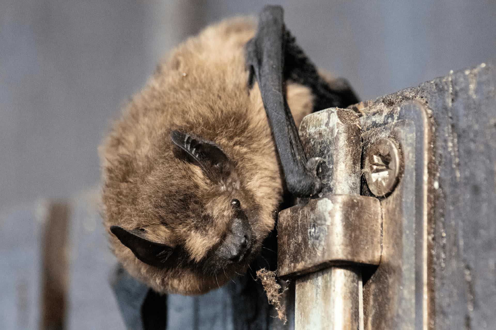
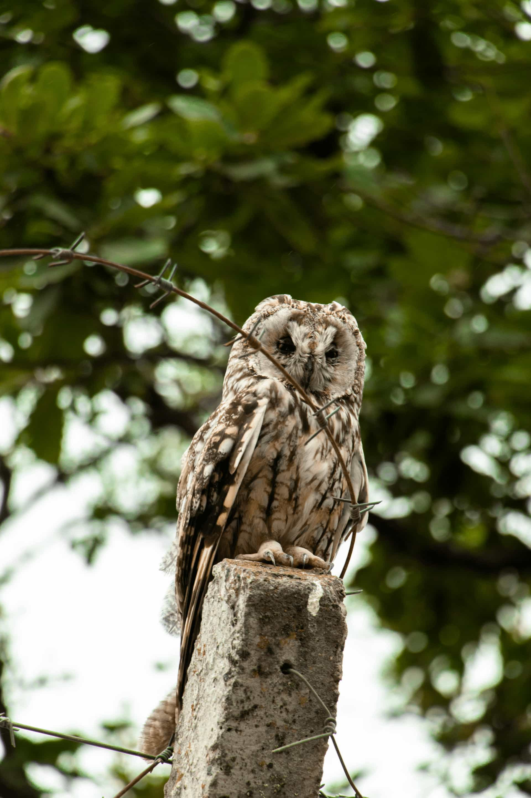

Ask whether the provider follows federal, state, and local wildlife requirements.
Request context
Bird and bat concerns can require more careful provider review.
We help homeowners describe bird or bat-related concerns in a focused way, so independent providers can better understand vents, chimneys, eaves, visible signs, timing, and possible local requirements before discussing next steps.
Platform role
We do not inspect, remove, exclude, repair, clean, or perform wildlife services directly.
Vents
Loose covers, nesting signs, airflow areas, or exterior openings
Chimneys
Sounds, odor, droppings, or activity near chimney areas
Timing
Seasonal activity, nesting periods, and possible local restrictions
Compare
Inspection approach, scope, estimates, and provider qualifications
Specialized requests
Bird & Bat Concern Matching
Bird and bat concerns may involve vents, eaves, chimneys, rooflines, droppings, odor, or seasonal restrictions. We help homeowners connect with independent providers and compare options while keeping legal and safety considerations clear.
Matching platform
Independent providers
Availability may vary

04
Bird & Bat Concerns
Request matching for bird or bat concerns involving vents, rooflines, exterior openings, droppings, or seasonal activity.
How to evaluate providers
Questions that help compare specialized provider options.
Before choosing a provider, homeowners should ask how bird or bat-related work is evaluated, whether timing rules may apply, and what is included in the written estimate.
Confirm whether timing restrictions may apply for birds or bats.
Request a written explanation of inspection, exclusion, and cleanup options.
Compare provider qualifications before choosing a service company.
Factors that may affect matching
Some wildlife requests require timing and regulation awareness.
Bird and bat-related concerns may depend on species rules, seasonal timing, vent or chimney access, visible signs, cleanup scope, and local wildlife requirements.

Provider fit
Species, season, access, visible signs, and local rules can affect provider
options.
Restrictions
Species-related rules or local requirements
Timing
Seasonal activity and possible timing limits
Access
Vent, chimney, eave, or roofline access points
Signs
Droppings, odor, staining, or nesting material
Inspection
How providers review the affected exterior areas
Scope
Cleanup, prevention, estimate, and follow-up details
Compare with clarity
Start request
Request matching for this wildlife concern.
Share useful details, compare independent provider options when available, and verify provider qualifications before hiring.